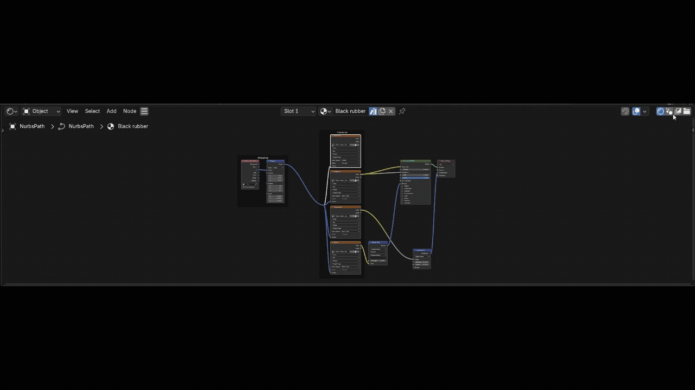

Blender add-on
Editor Subtabs
Put your most-used editors in the header as one-click tabs, organized into named groups.

Features
- One-click switchingYour most-used editors sit as tabs in the header, always a click away.
- Organize into groupsBuild named groups (Look-Dev, Animation, Layout…) and choose which editors live in each. Reorder, hide, or remove any group.
- One editor, one groupThe same editor can never sit in two groups at once. Assign it somewhere new and it's cleared from its old slot automatically, so tabs never duplicate.
- Left or right, per groupChoose Left or Right alignment for each group, so tabs sit exactly where you want them in the header.
- Three display modesIcon only, icon + short name, or name only — set independently for each group.
- Scroll to switch (optional)Hold Alt/Option (or Shift) and roll the wheel over an editor to cycle through its group. Full macOS trackpad two-finger support, with adjustable step size and reverse direction. Enable per group — no hotkeys required.
- Live header previewSee exactly how your tabs will look in the settings panel, before you close it.
- Export / import your setupSave your whole configuration as a JSON file, load it back later, or reset everything to defaults in one click.
- Save-safety warningIf Blender's preference auto-save is off, the add-on tells you — so your layout is never silently lost.
Requirements & notes
Requirements
Requires Blender 4.2 or later. Pure Python — runs on Windows, macOS, and Linux.
Supported editors (23)
3D Viewport, Image, UV, Shader, Geometry Nodes, Compositor, Texture Nodes, Timeline, Dope Sheet, Graph Editor, Drivers, NLA, Video Sequencer, Movie Clip, Text Editor, Python Console, Info, Outliner, Properties, File Browser, Asset Browser, Preferences, and Spreadsheet.
Install
- Download the .py file on the right.
- In Blender, open Edit ▸ Preferences ▸ Add-ons.
- Open the ▾ menu at the top-right, choose "Install from Disk…", then pick the .py file.
- Turn the add-on on with its checkbox, then open its preferences panel to build your first group.
Stop hunting through editor-type menus — your favorites are always one click away.
Editor Subtabs
Blender add-on
Version1.0.0
Blender4.2+
OSAll
Free and open. Everything runs locally in Blender — nothing is uploaded.